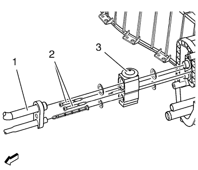

Sustitución de la válvula de expansión térmica de evaporador de aire acondicionado — LDE, LLU, LXT, LXV, L2W y 2H0
Herramientas especiales
GE 39400-A Detector de fugas halógeno
Si desea informarse sobre herramientas regionales equivalentes, consultar Herramientas especiales
Procedimiento de desmontaje
- Recubra el agente frigorífico. Consultar Recuperación y recarga del agente frigorífico .
- Suelte las tuberías del freno.

- Retire la manguera del condensador (1) del evaporador TXV del A/C.
- Retire los 2 tornillos TXV del A/C (2).
- Retire la TXV (3).
Procedimiento de montaje
Precaución:Consulte Precaución con las fijaciones en la sección Prólogo.
- Monte la TXV del A/C (3) y los 2 tornillos TXV del A/C (2) y apriételos a 15 N·m (11 lib. pies).
Nota: Utilice juntas tóricas NUEVAS. Consultar Sustitución de la junta tórica del aire acondicionado .
- Monte la manguera del condensador (1) en el evaporador TXV del A/C (3). Consultar Sustitución del tubo flexible del compresor y condensador de aire acondicionado → 2.0L diesel LNP → 1.4L LUJ → LDE, LLU, LXV y 2H0 → 1.6L LXT, L2W → 2.0L Diésel LLW .
- Instale las tuberías del freno.
- Vacíe y llene el sistema de agente frigorífico. Consultar Recuperación y recarga del agente frigorífico .
- Realice una comprobación de estanqueidad en los ajustes mediante el detector GE 39400-A.
| © Copyright Chevrolet. Reservados todos los derechos |